Selected Baby Products
Useful baby picks with short descriptions, Merchant Pick Scores, feedback snapshots, and quick highlights.

Binxy Baby Shopping Cart Hammock
A shopping cart hammock designed to support easier grocery trips with infants while keeping the cart more usable.
A quick overview of what shoppers commonly expressed.
- Often liked for grocery-trip convenience
- Useful for parents who shop with infants
- Helps free up cart space compared with bulky setups
- Always follow the product instructions and age guidance

Clear Outlet Covers 50 Pack
A value pack of transparent outlet covers for homes preparing baby and toddler spaces.
A quick overview of what shoppers commonly expressed.
- Often liked for simple home baby-proofing
- Clear style blends into many outlets
- Large pack is useful for multiple rooms
- Best used as one part of a broader safety setup

Doona Car Seat & Stroller
An all-in-one infant car seat and stroller travel system made for quicker transitions during outings.
A quick overview of what shoppers commonly expressed.
- Often liked for travel and transition convenience
- Combines stroller and infant seat functionality
- Useful for errands, cars, and compact storage needs
- Parents should confirm fit, age, and installation guidance

Dreambaby Duck Baby Bath Thermometer
A floating duck bath thermometer that displays water temperature for bath-time awareness.
A quick overview of what shoppers commonly expressed.
- Often liked for easy bath temperature checks
- Fun duck design fits bath-time routines
- Can also help check room temperature
- A simple tool for more informed bath prep

Hiccapop OmniBoost Travel Booster Seat
A portable booster seat with tray for dining, travel, camping, restaurants, and visiting family.
A quick overview of what shoppers commonly expressed.
- Often liked for travel and restaurant use
- Compact fold helps with storage and carrying
- Tray makes feeding away from home easier
- Best used according to the seat and strap instructions

ME.FAN Silicone Baby Bibs
Adjustable silicone baby bibs with a food-catching pocket for everyday meals and snack time.
A quick overview of what shoppers commonly expressed.
- Often liked for easy cleaning after meals
- Pocket helps catch small food spills
- Adjustable fit supports different ages
- Useful everyday pick for feeding routines

NutriBullet Baby Food-Making System
A baby food-making system for blending and preparing small batches of baby meals at home.
A quick overview of what shoppers commonly expressed.
- Often liked for homemade baby food prep
- Includes useful accessories for small portions
- Good fit for parents who batch-prep meals
- Cleaning and storage needs should be considered

OXO Tot Perfect Pull Wipes Dispenser
A weighted baby wipes dispenser designed to help pull one wipe at a time during diaper changes.
A quick overview of what shoppers commonly expressed.
- Often liked for smoother wipe dispensing
- Weighted plate helps reduce wipe clumps
- Good fit for changing stations and nurseries
- Simple everyday upgrade for diaper routines

VTech Sit-to-Stand Learning Walker
A baby activity walker with interactive play features for floor play and supported walking stages.
A quick overview of what shoppers commonly expressed.
- Often liked for interactive play features
- Supports sit-down play and walker-style use
- Good gift-friendly baby activity pick
- Use should match the child's stage and supervision needs

WeeSprout Suction Plates
Silicone suction plates with divided sections for babies and toddlers during self-feeding meals.
A quick overview of what shoppers commonly expressed.
- Often liked for toddler self-feeding
- Suction base helps reduce plate sliding
- Divided design supports simple meal portions
- Good daily feeding pick for babies and toddlers

GROWNSY Electric Baby Nasal Aspirator
An electric nasal aspirator designed to help parents clear baby congestion more easily during colds, allergies, or stuffy-nose days.
A quick overview of what shoppers commonly expressed.
- Often liked for suction performance and simple use
- Helpful for congestion and stuffy-nose care
- Useful during everyday baby-care routines
- Some buyers may want to check durability expectations

GROWNSY Bottle Sterilizer and Dryer
A compact electric steam bottle sterilizer and dryer for baby bottles, pacifiers, and feeding accessories.
A quick overview of what shoppers commonly expressed.
- Often liked for bottle-care convenience
- Drying function helps complete the routine faster
- Compact setup fits many kitchens and counters
- Useful for parents managing daily bottle cleaning

Konssy Muslin Baby Lounger Cover
A soft muslin baby lounger cover set made for breathable-feeling replacement covers and easy nursery refreshes.
A quick overview of what shoppers commonly expressed.
- Often liked for soft muslin fabric feel
- Useful as extra replacement covers
- Good fit for nursery setups and laundry rotation
- Cover fit should be checked before buying

Lictin Baby Healthcare & Grooming Kit
A rechargeable baby grooming kit with nail trimming and care tools for home baby-care routines.
A quick overview of what shoppers commonly expressed.
- Often liked for having many care tools in one kit
- Rechargeable nail trimmer adds convenience
- Useful for baby grooming and nursery organization
- Best used gently and with age-appropriate attachments

Lily Miles Baby Diaper Caddy Organizer
A large diaper caddy tote for diapers, wipes, creams, small toys, and newborn essentials.
A quick overview of what shoppers commonly expressed.
- Often liked for organizing diaper essentials
- Portable tote design helps move supplies room to room
- Useful for nurseries, changing stations, and travel
- Good baby shower style product

Pamo Babe 4-in-1 Playard
A portable baby playard with bassinet, changing table, mesh sides, and travel-friendly nursery use.
A quick overview of what shoppers commonly expressed.
- Often liked for multi-function baby setup
- Portable design helps with travel and room changes
- Mesh sides support visibility
- Parents should follow all setup and sleep-use guidance

PopYum Insulated Kids Cups
Insulated stainless kids cups with lids and straws for toddlers, daycare, outings, and everyday drinks.
A quick overview of what shoppers commonly expressed.
- Often liked for toddler drink routines
- Insulated stainless design helps keep drinks cooler
- Stackable format is storage friendly
- Good fit for daycare, travel, and home use

ICOPUCA Shopping Cart Cover
A reversible cotton shopping cart and high chair cover designed for more comfortable outings with babies.
A quick overview of what shoppers commonly expressed.
- Often liked for shopping cart and high-chair use
- Reversible design adds flexibility
- Machine-washable format helps with cleanup
- Useful for parents who frequently shop or dine out

oogiebear Baby Nose Cleaner
A baby nose and ear cleaning tool designed for careful, simple baby-care routines.
A quick overview of what shoppers commonly expressed.
- Often liked for targeted baby nose cleaning
- Small tool fits everyday baby-care kits
- Useful during stuffy-nose routines
- Use gently and according to product instructions
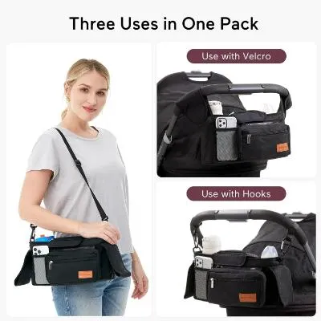
Momcozy Universal Stroller Organizer
A stroller organizer with insulated cup holders and detachable phone bag for walks, errands, and parent essentials.
A quick overview of what shoppers commonly expressed.
- Often liked for stroller storage convenience
- Cup holders and phone bag help organize essentials
- Good fit for errands, walks, and travel
- Attachment fit should be checked with your stroller
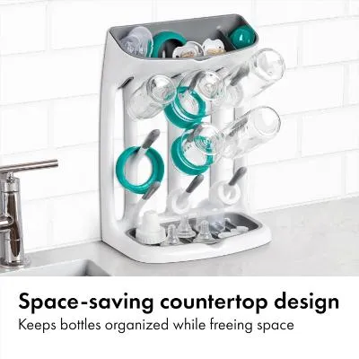
OXO Tot Space Saving Drying Rack
A compact drying rack for bottles, pump parts, pacifiers, and small baby feeding accessories.
A quick overview of what shoppers commonly expressed.
- Often liked for saving counter space
- Useful for bottle and small-parts drying
- Vertical format helps organize feeding accessories
- Good fit for kitchens with limited space
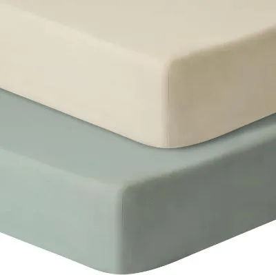
GUNTAIL Baby Crib Sheets
Soft fitted crib sheets made for standard crib and toddler mattresses, with a simple everyday design for nursery use.
A quick overview of what shoppers commonly expressed.
- Often liked for softness and nursery comfort
- Good fit for standard crib mattress sizing
- Practical everyday nursery essential
- Best understood as crib sheets, not a crib mattress
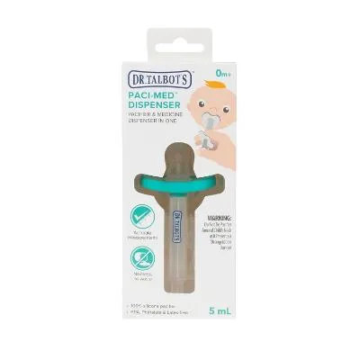
Dr. Talbots Paci-Med Baby Medicine Dispenser
A pacifier-style baby medicine dispenser designed to make measured liquid medicine routines easier for caregivers.
A quick overview of what shoppers commonly expressed.
- Often liked for helping with liquid medicine routines
- Pacifier-style format may feel familiar for some babies
- Useful addition to baby-care supplies
- Always follow dosage guidance from a healthcare professional
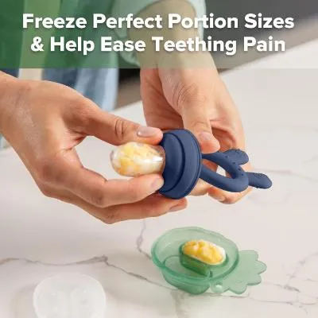
Haakaa Baby Fruit Food Feeder Combo
A baby fruit feeder and freezer nibble tray combo for introducing soft foods and frozen treats in a controlled format.
A quick overview of what shoppers commonly expressed.
- Often liked for teething and snack routines
- Feeder design supports small controlled portions
- Freezer tray adds prep convenience
- Use should match age and feeding readiness
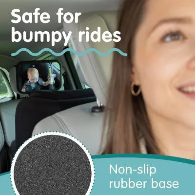
Onco Baby Car Mirror
A rear-facing baby car mirror designed to help parents check on babies from the front seat.
A quick overview of what shoppers commonly expressed.
- Often liked for checking on rear-facing babies
- Wide mirror design improves visibility
- Useful for everyday car rides
- Install securely and follow manufacturer guidance
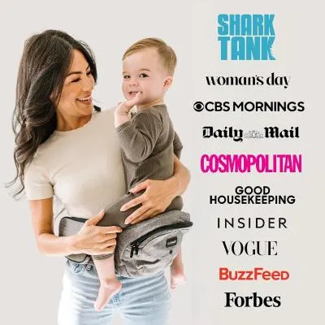
Tushbaby Hip Seat Carrier
A hip seat baby carrier designed to make short carries and toddler up-and-down moments easier.
A quick overview of what shoppers commonly expressed.
- Often liked for quick carrying convenience
- Helpful for toddlers who want frequent pick-ups
- Storage pockets add parent-friendly utility
- Fit and carrying guidance should be checked before use
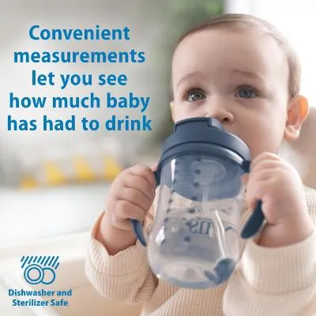
Dr. Brown’s Milestones Straw Cup
A weighted-straw training cup designed to help babies transition from bottles to straw drinking with easier sipping from different angles.
A quick overview of what shoppers commonly expressed.
- Good first straw cup for baby transitions
- Weighted straw helps with drinking from different angles
- Easy for small hands to hold
- Some buyers may want to check leak expectations
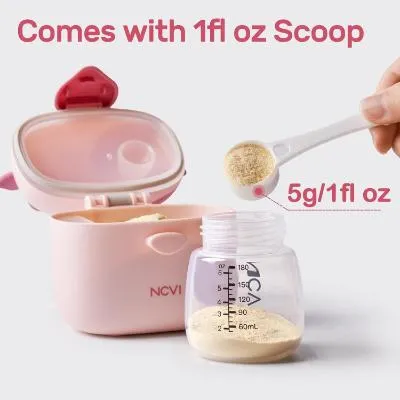
NCVI Baby Formula Dispenser
A travel formula container with measured compartments for outings, diaper bags, and outdoor feeding routines.
A quick overview of what shoppers commonly expressed.
- Often liked for travel feeding organization
- Compartment design helps separate portions
- Useful for diaper bags and day trips
- Cleaning and sealing should be checked before use
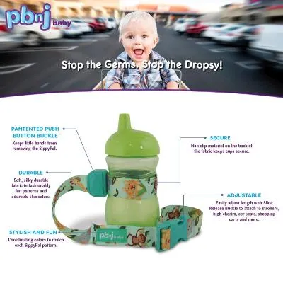
PBnJ Baby SippyPal Holder
A sippy cup strap and tether holder made to help keep cups attached during travel, stroller rides, and meals.
A quick overview of what shoppers commonly expressed.
- Often liked for reducing dropped cups
- Useful for strollers, high chairs, and travel
- Simple strap design is easy to understand
- Good small accessory for toddler routines
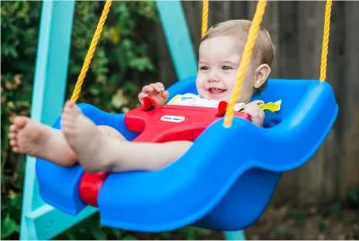
Little Tikes Snug ’n Secure Swing
A classic toddler and baby swing designed for outdoor play, secure seating, and simple backyard fun.
A quick overview of what shoppers commonly expressed.
- Often liked for simple outdoor play value
- Recognizable Little Tikes product with broad family appeal
- Good visual variety for the Baby section
- Some buyers may want to check buckle and setup details
Silicone Baby Spoons 2-Pack
Soft silicone baby feeding spoons with standing bases for infant feeding routines.
A quick overview of what shoppers commonly expressed.
- Useful for soft early feeding routines
- Standing base helps keep spoon tips off surfaces
- Simple 2-pack format supports daily use
- Best for age-appropriate feeding stages
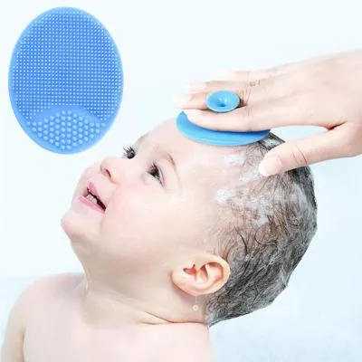
Baby Bath Brush / Cradle Cap Brush
A silicone baby bath brush set for gentle bath-time scalp and skin care routines.
A quick overview of what shoppers commonly expressed.
- Often liked for gentle bath-time use
- Silicone design is easy to rinse
- Useful for baby scalp and body care routines
- Use softly and avoid irritated areas
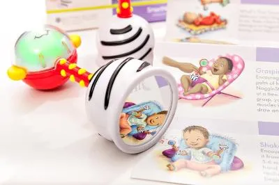
SmartNoggin NogginStik Rattle
A light-up developmental rattle with textures and mirror details for early baby play.
A quick overview of what shoppers commonly expressed.
- Often liked for engaging light-up play
- Textures and mirror details add variety
- Good gift-friendly baby toy
- Play should be supervised and age-appropriate
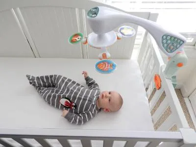
Baby Crib Mobile & Projector
A crib mobile and projector with sound options for nursery routines and soothing visual interest.
A quick overview of what shoppers commonly expressed.
- Often liked for nursery sound and visual features
- Projector adds soft room interest
- Good fit for bedtime and crib-area routines
- Follow crib attachment and safety instructions carefully
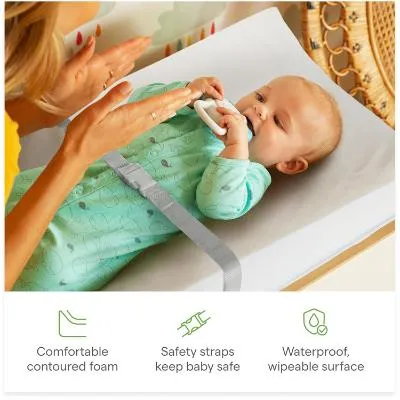
Munchkin Secure Grip Changing Pad
A waterproof and wipeable diaper changing pad with contoured sides for dresser or changing station setups.
A quick overview of what shoppers commonly expressed.
- Often liked for easy wipe-clean diaper changes
- Contoured design supports changing-station routines
- Good fit for dressers and nursery setups
- Always keep one hand on baby during changes
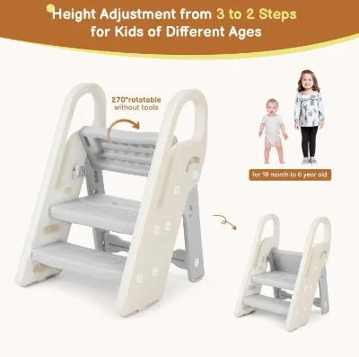
Onasti Foldable Step Stool
An adjustable foldable step stool for bathroom sinks, potty training, and toddler independence routines.
A quick overview of what shoppers commonly expressed.
- Useful for sinks and potty-training routines
- Foldable design helps with storage
- Adjustable steps add flexibility
- Supervision and surface stability still matter
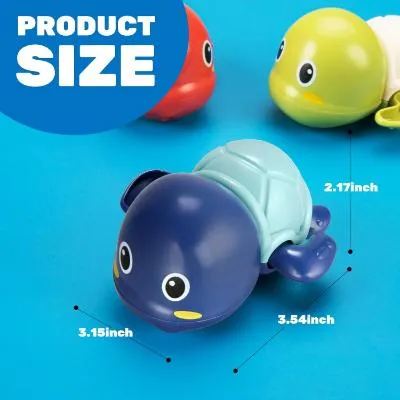
TOHIBEE Bath Toys
A set of swimming turtle bath toys for toddlers and baby bath-time play.
A quick overview of what shoppers commonly expressed.
- Often liked for fun bath-time play
- Cute turtle design is easy for kids to enjoy
- Good affordable bath toy pick
- Toy preferences and cleaning routines can vary
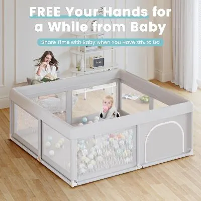
Hiaksedt Baby Playpen
A large baby playpen for creating a defined indoor or outdoor play area for babies and toddlers.
A quick overview of what shoppers commonly expressed.
- Useful for creating a contained play area
- Large size works for play mats and toys
- Good fit for living rooms and family spaces
- Setup and supervision are still important
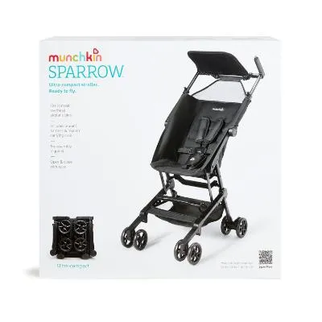
Munchkin Sparrow Travel Stroller
An ultra-compact lightweight travel stroller designed for babies and toddlers during trips and errands.
A quick overview of what shoppers commonly expressed.
- Often liked for compact travel storage
- Lightweight format helps with trips and errands
- Good fit for parents needing a smaller stroller
- Age, weight, and comfort needs should be checked
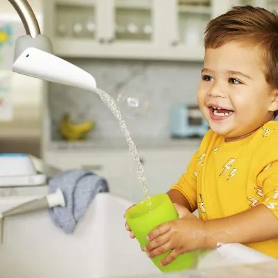
Munchkin Faucet Extender
A faucet extender that helps bring water closer during toddler handwashing routines.
A quick overview of what shoppers commonly expressed.
- Useful for toddler sink routines
- Simple install-and-use concept
- Can make handwashing easier for little arms
- Fit depends on faucet shape
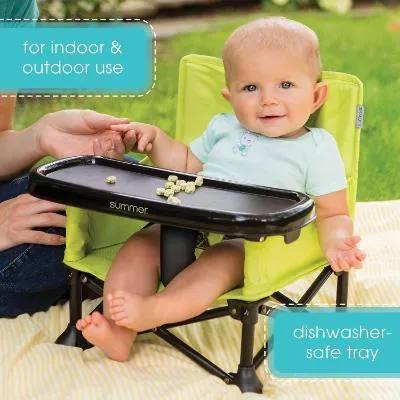
Summer Pop ’N Sit Booster Chair
A portable booster chair and floor seat for indoor, outdoor, travel, and mealtime use.
A quick overview of what shoppers commonly expressed.
- Often liked for portable mealtime use
- Works for indoor and outdoor routines
- Compact fold is convenient for travel
- Use should match child size and product guidance
Dr. Brown’s Silicone Finger Toothbrush
A soft silicone finger toothbrush with travel case for early baby gum and tooth care routines.
A quick overview of what shoppers commonly expressed.
- Useful for early oral-care routines
- Soft silicone design is simple to use
- Travel case helps keep it stored cleanly
- Follow age guidance and gentle brushing recommendations
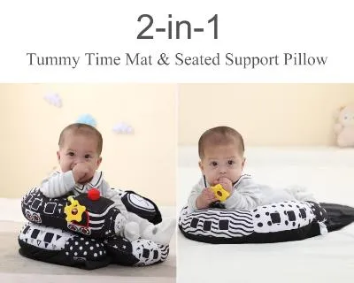
Lovvie & Joy Tummy Time Mat
A 2-in-1 tummy time mat and seated support pillow for supervised baby floor play and support routines.
A quick overview of what shoppers commonly expressed.
- Designed for supervised tummy-time routines
- 2-in-1 format adds flexible use
- Good option for floor play and support practice
- Placed lower because feedback was weaker than other picks
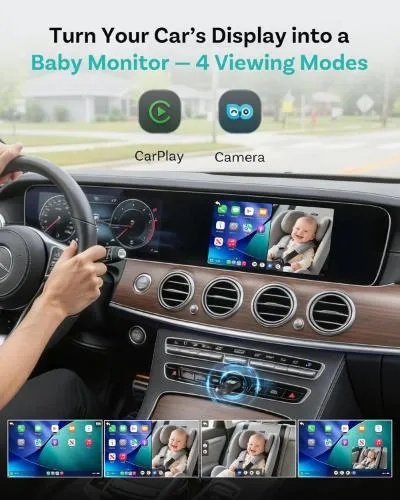
OTTOCAST Baby Car Camera
An in-car baby camera designed to help parents monitor a rear-facing child through the car display without adding a separate screen.
A quick overview of what shoppers commonly expressed.
- Helpful for checking a baby in the back seat
- Uses the car display instead of an extra monitor
- Good product variety for the Baby section
- Check car compatibility before buying
Why These Baby Picks?
This page brings together practical baby products with clear everyday use cases, including feeding, travel, stroller organization, grooming, bottle care, bath time, diaper setup, nursery support, toddler play, and baby-care essentials.
Product details, prices, ratings, and availability can change on Amazon. Always check the final Amazon product page before making a purchase.